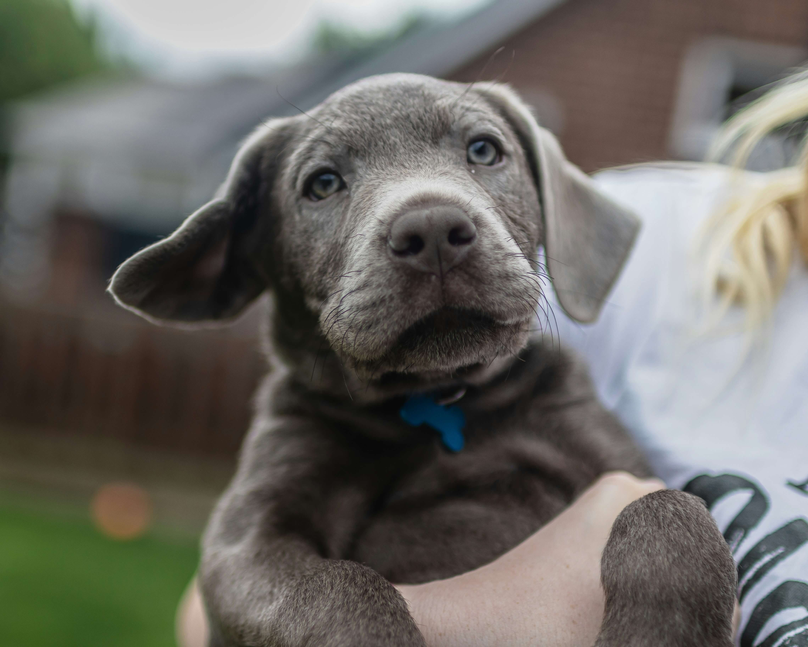
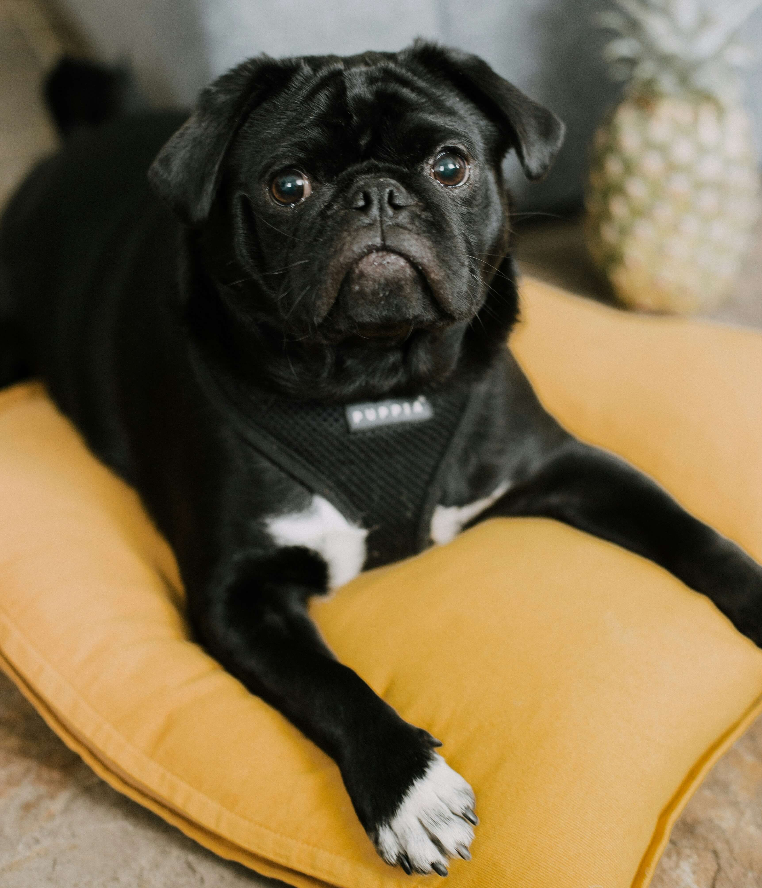
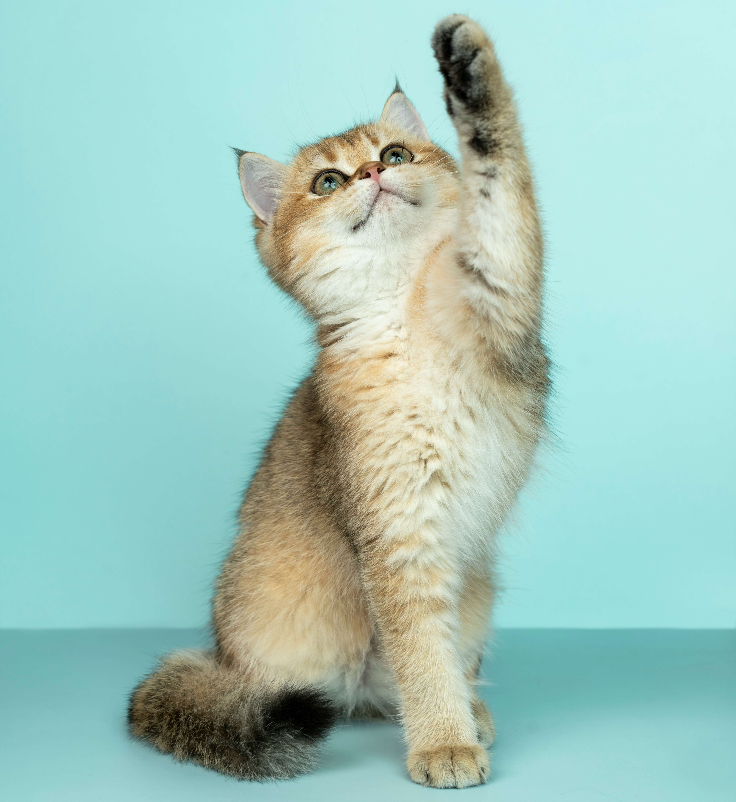

Missão
Somos a organização Patapet Feliz, uma osc sem fins lucrativos e temos como missão lutar pelos direitos dos animais, tratar e acolher os nossos amiguinhos com muito amor e encontrar novos lares. Criamos ações de conscientização de proteção e cuidados aos animais.

Visão
Conseguir ajudar o maior número de animais em abandono.

Valores
Atuamos na proteção e resgate dos animai oferecendo tratamentos e cuidados. Encontramos novos lares e conscientizamos a sociedade sobre os cuidados aos animais.
